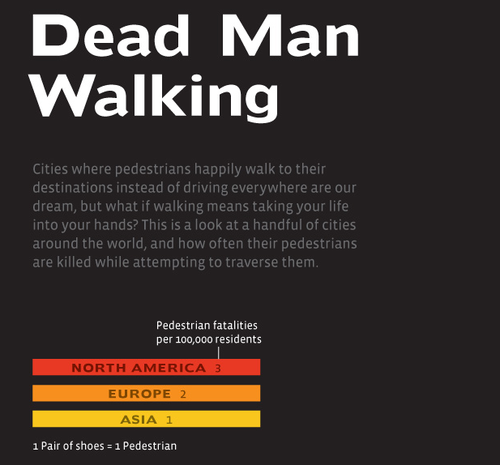
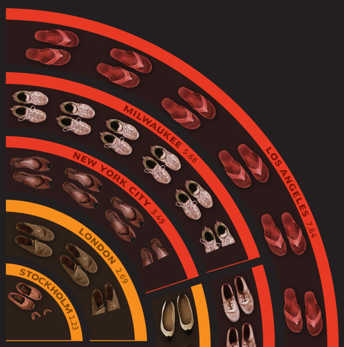

Sun, 05 Sep 2010 18:19:00 · Infographic · LosAngeles · NYC · Tokyo · HongKong · Pedestrian · Cities · City · Walking
Infographic: The Most Dangerous Cities for Walking
An interesting comparison study on where Pedestrians can happily walk about the cities without fear of being run over by vehicles. [Un]surprisingly, most streets in major US cities aren’t built for walking. Try doing so in Los Angeles then people would think you either asking for trouble or you’re poor. 
Stockholm, Tokyo, Hong Kong and Berlin are considered the safest cities for walking, whereas doing so in Atlanta, Detroit or Los Angeles may not be a smart idea.

See more complete info on Good here. ~ Data source: The NYC Pedestrian Safety and Action Plan, August 2010.